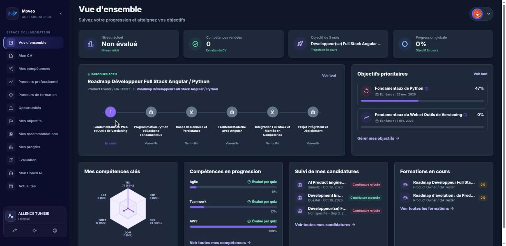
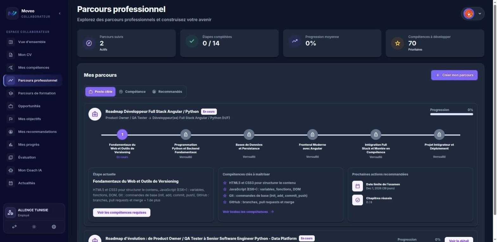
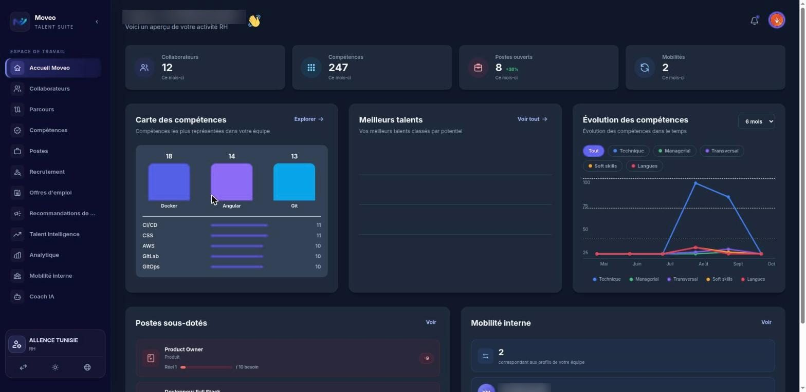
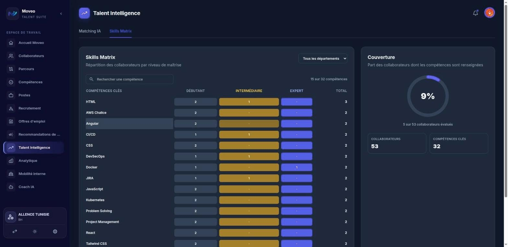

An AI-assisted talent management platform for companies: employees grow their skills and career, HR teams validate, plan and decide, and company owners oversee their HR team.
3user spaces: employee, HR, owner
3interface languages: French, English, Arabic
2AI assistants: career coach and HR assistant
70+HR tools the assistants can use on company data
At a glance
Moveo is a web platform that helps a company know, develop and keep its people. It brings skills, training, career paths, internal opportunities, goals and HR analytics into one place, with a separate space for each role.
Artificial intelligence supports the daily work: it generates learning paths and quizzes, evaluates completed training, matches people to positions and answers questions through assistants that read the company's real data. HR staff keep the final decision on every validation.
Who it's for
Employees
Follow their skills, take quizzes, work through learning paths, set goals, explore internal opportunities and ask an AI career coach for advice.
HR teams
Manage collaborators and positions, validate skills and training, run recruitment, follow analytics and internal mobility, and query an AI HR assistant.
Company owners
Act as company administrators: they manage the HR team, invite HR managers and get an overview of the organisation.
Growing companies
Small and mid-sized companies and tech firms whose value depends on their teams' skills, and that want to retain talent through internal mobility.
The problem it solves
Skills kept in spreadsheets
Team skills are often tracked in scattered files and are not used to plan training or internal moves.
Training without a goal
Courses are rarely tied to a target position or checked by HR, so progress is hard to measure.
Talent leaving unnoticed
Without a view of aspirations and open positions, companies hire outside while suitable people are already inside.
Slow HR decisions
Comparing profiles, reviewing training results and answering managers' questions takes time when the data is spread out.
Main features
Skills and quizzes
Skills grouped by category, assessed by quizzes; HR reviews quiz results and validates skills at expert level.
Career path
A step-by-step roadmap toward a target position, with the current step, the key skills to acquire and recommended next actions.
Learning paths
AI-generated chapters, practice sessions with multiple-choice questions and a final exam, then an AI evaluation reviewed and approved or refused by HR.
Internal opportunities
Open positions inside the company with a compatibility score, matching and missing skills, and the option to apply or show interest.
Goals and progress
Personal goals with deadlines and progress, personalised recommendations, badges and a history of learning activity.
Positions and recruitment
Positions with needs versus headcount, understaffed roles, job offers created from a position, and a recruitment pipeline with AI scores.
Talent intelligence
Best internal profiles for each position and a skills matrix showing how many people master each skill and at which level.
Analytics and mobility
HR dashboard with headcount, retention and turnover; internal mobility views for career paths, promotion readiness and aspirations.
AI assistants
A career coach for employees and an HR assistant for HR teams, both answering from the company's data, with a choice of AI model and visible reasoning steps.
Owner space
Management of the HR team with invitations, and an overview of staff, users by role and AI usage.
How it works
Set up the company
The owner invites the HR managers; HR adds collaborators, positions and the skills each position requires.
Assess skills
Employees take quizzes on their skills; HR reviews the results and validates the expert-level skills.
Learn toward a goal
An employee picks a target position; the AI builds a path of chapters, sessions and a final exam, then evaluates the result.
HR decides
HR reads the AI evaluation, approves or refuses the path and the skill is updated in the employee's profile.
Match people to positions
Open positions are compared with internal profiles; recommendations go to employees and HR follows mobility and recruitment.
Ask the assistants
Employees and HR ask questions in plain language; the assistant looks up the company's real data and shows the steps it took.
Technologies
Interface
Angular and TypeScriptBuild the single web application with one space per role.
Tailwind CSSStyles the interface, with light and dark themes.
ngx-translateProvides the French, English and Arabic versions of the interface.
Server & APIs
Python on AWS LambdaRuns the business APIs for skills, positions, training, quizzes and recruitment.
Amazon API GatewayExposes the REST APIs used by the web application.
Amazon CognitoHandles sign-in; each user chooses a company and a role after login.
Amazon SQSQueues long AI tasks so the interface stays responsive while they run.
Data
MongoDBStores collaborators, skills, positions, learning paths and conversations.
Vector searchCompares profiles and offers by meaning to support matching and the assistants.
Amazon S3Stores uploaded documents and hosts the web application.
AI
LangGraphDrives the assistant that plans its steps and calls tools to answer a question.
Model Context Protocol (MCP)Gives the assistants controlled access to HR data, filtered by role and company.
FastAPI AI servicesGenerate quizzes and learning paths, evaluate exams and recommend career steps.
Central AI gatewayGives single access to several AI model providers, with fallback models and cost tracking.
Cloud & deployment
Kubernetes and ArgoCDRun and deploy the assistant and AI services.
Terraform and TerragruntDescribe the cloud infrastructure as code for each environment.
HashiCorp VaultKeeps secrets out of the code.
GitLab CIBuilds, tests and packages each component.
Quality
VitestTests the web application.
pytest, ruff and mypyTest and check the Python services and the assistant.
Preview

Employee overview: level, active roadmap, priority goals and key skills.

Career path toward a target position, step by step.

HR home: skills map, skills evolution and understaffed positions.

Talent intelligence: skills matrix by level and coverage.
What it brings
A clear view of skills
Each collaborator's skills are assessed, validated and visible to HR across the whole company.
Training with a purpose
Learning paths lead to a target position and end with an evaluation that HR approves.
Internal mobility first
Open positions are matched with people already in the company before looking outside.
Faster, informed decisions
AI prepares scores, evaluations and answers, while HR keeps the final say.